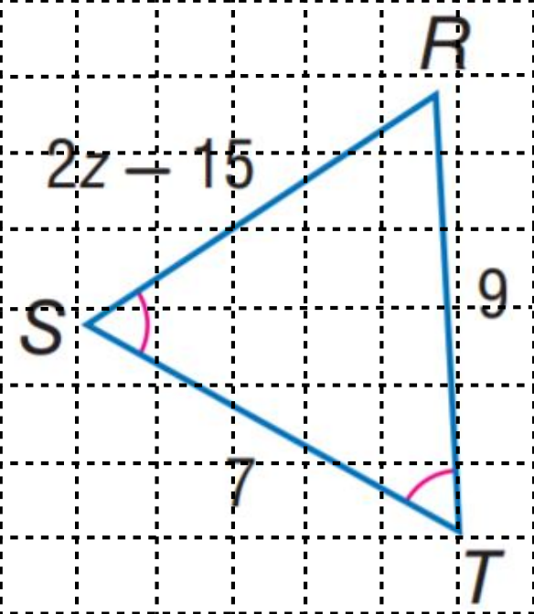

Question: Based on this diagram, find the value of z.
(A) 7(B) 9(C) 12(D) 15
Standard approach text-based reasoning
logitgen ∈ ℝ|V|
text token distribution
v1 point-and-copy reasoning
logitt = [ logitgen ‖ logitptr ] ∈ ℝ|V|+K
text + copy token distribution
point-and-copy
Reasoning that revisits the image
A real trace from the v1g training set. As the model works through the problem, each detect(…) call grounds the next step in a region of the image. Hover or focus an ⟨obj⟩ token to see where it points.
task AB is tangent to circle O at A, and ∠AOB = 70°. Find ∠B. A: 10° B: 20° C: 30° D: 35°
I know that a tangent to a circle is perpendicular to the radius at the point of tangency. So, I need to look at the tangent line AB.
detect(query="tangent line AB", objects=[])
Since is tangent to the circle at point A, then OA, which is the radius, should be perpendicular to it. Let me find radius OA.
detect(query="radius OA", objects=[])
That means angle OAB is 90 degrees.
detect(query="angle OAB", objects=[])
detect(query="angle AOB", objects=[])
detect(query="triangle AOB", objects=[])
In a right triangle , the sum of the angles is 180 degrees. So, angle B = 180° − − = 180° − 90° − 70° = 20°. ✓ B
abstract
Why point-and-copy
When thinking with images, humans rarely rely on a single glance: they revisit visual evidence while reasoning. In contrast, most Multimodal Language Models encode an image once to key-value cache and then reason purely in text, making it hard to re-ground intermediate steps. We empirically confirm this: as reasoning chains lengthen, models progressively lose focus on relevant regions. We introduce v1, a lightweight extension for active visual referencing via point-and-copy: the model selects relevant image patches and copies their embeddings back into the reasoning stream. Crucially, our point-and-copy mechanism retrieves patches using their semantic representations as keys, ensuring perceptual evidence remains aligned with the reasoning space. To train this behavior, we build v1g, a dataset of 300K multimodal reasoning traces with interleaved grounding annotations. Across multimodal mathematical reasoning benchmarks, v1 consistently outperforms comparable baselines.
artifacts
Everything is released
cite
BibTeX
@misc{chung2025v1learningpointvisual,
title={v1: Learning to Point Visual Tokens for Multimodal Grounded Reasoning},
author={Jiwan Chung and Junhyeok Kim and Siyeol Kim and Jaeyoung Lee
and Min Soo Kim and Youngjae Yu},
year={2025},
eprint={2505.18842},
archivePrefix={arXiv},
primaryClass={cs.CL},
url={https://arxiv.org/abs/2505.18842},
}